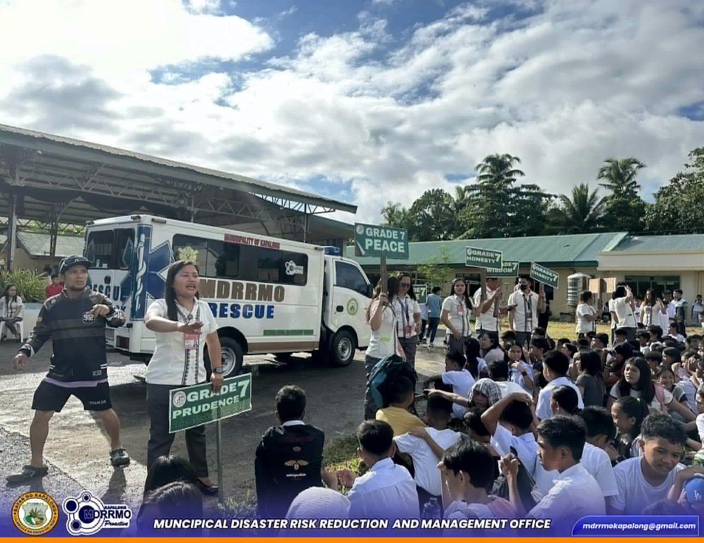
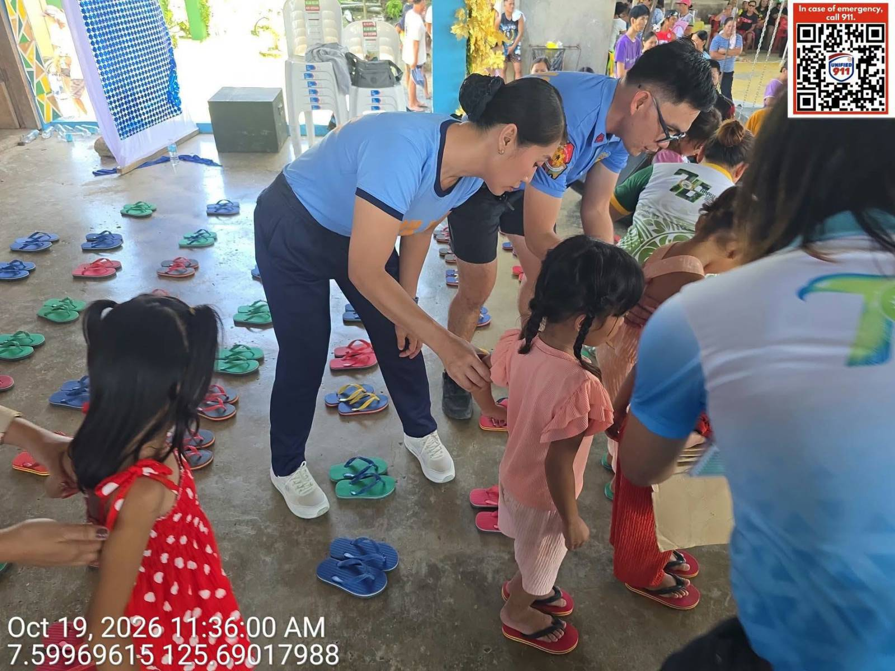

Magnitude 7.8 earthquake felt in Kapalong
Original report from Kapalong Today describing the shaking, community response, and safety reminders on June 8, 2026.
Read original story →
KAPALONG TODAY ORIGINALKapalong Today reported residents feeling strong ground shaking on June 8, 2026, and urged the community to stay calm and follow safety advisories.
Read original Kapalong Today reportFour ways to stay connected with the people, ideas, and activities around our community.
Original report from Kapalong Today describing the shaking, community response, and safety reminders on June 8, 2026.
Read original story →
NEWSThe Kapalong MPS activity in Barangay Tiburcia on October 19, 2026, provided slippers to children during Araw Tiburcia.
Read story →Reliable power and clear outage updates affect families, schools, and small businesses.
Read editorial →E / 01Healthcare transport can help residents in far-flung communities reach essential services.
Read editorial →E / 02Kapalong Today’s original report highlights the celebration organized with support from the KCAST Supreme Student Council on October 5, 2026.
Read original story → FEATURES
FEATURES
An automated weather station at KCAST may support learning and agriculture-related decision-making.
Read feature →A February 2026 report highlighted Dave Supnet, Romy Ang, and Dodong Postanes in connection with Kapalong basketball.
Read sports story →The regional meet opened in Tagum City in February, bringing student-athletes together for competition.
Read sports story →Kapalong Today is a community-focused space for news, perspectives, features, and sports. We believe local stories deserve care, clarity, and a place to be heard.
“Kamatuoran ang Sukdanan, Katawhan ang Serbisyohan.”Editorial note: This student-style site summarizes linked reports and includes opinion writing. Check facts, dates, image permission, and source links before public publication.